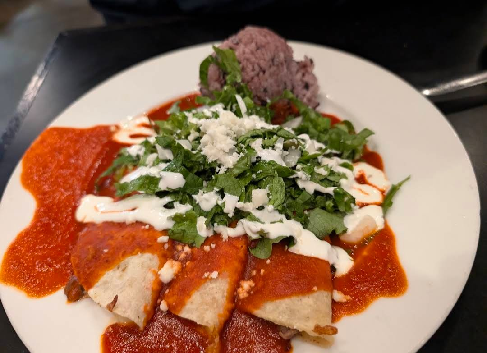
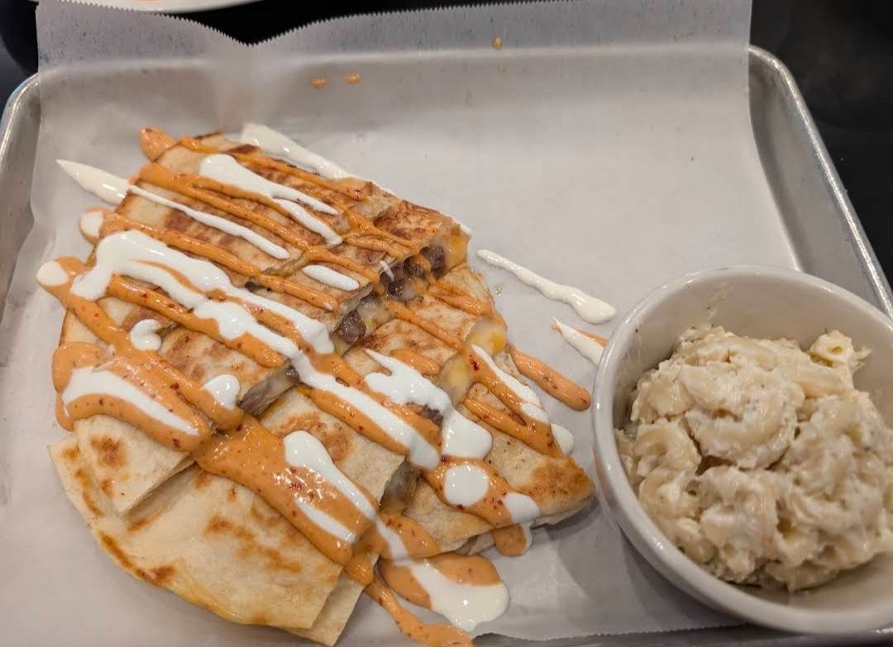

Restaurant Review · Anchorage, AK
Seoul Casa
Korean Mexican Fusion
★★★★★
Seoul Casa
601 E Dimond Blvd Ste 6, Anchorage, AK 99515
Rating: 5/5
601 E Dimond Blvd Ste 6, Anchorage, AK 99515
Rating: 5/5
Seoul Casa is an absolute gem! The fusion of Korean and Mexican flavors is executed perfectly. I ordered the bulgogi egg rolls, which were crispy and packed with delicious, savory flavor. The kalbi beef enchiladas and quesadilla were both outstanding—tender, flavorful, and filling. The mac salad was the perfect side to round out the meal. Every dish was well-prepared and full of unique, delightful flavors. Highly recommend this spot for anyone looking to try something different and amazing!
What we ordered
Bulgogi Egg Rolls · Kalbi Beef Enchiladas · Quesadilla with Mac Salad



Comments
Sign in with GitHub to leave a comment or reaction.